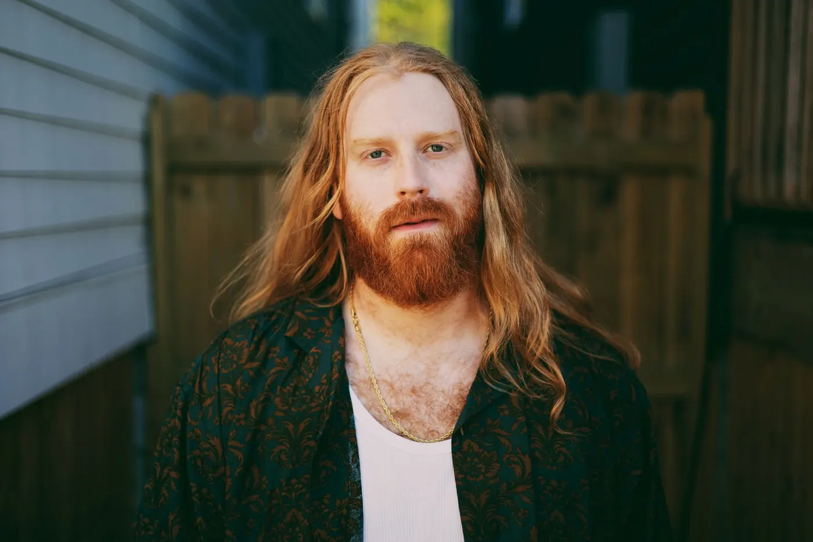

About Mitchell
A country-soul artist from Texas

Gritty vocals and a genre-blending sound have earned comparisons to Chris Stapleton and Teddy Swims.
His music walks the line between soulful storytelling and rock-driven energy. A true independent, Ferguson built his fanbase from the ground up through viral moments, powerful live shows and a voice that feels both familiar and fresh.
Whether he’s delivering a stripped-down ballad or lighting up a packed venue, Mitchell brings authenticity to every line.
Shared the stage with
Good company
- Parker McCollum
- Whiskey Myers
- Charley Crockett
- Allen Stone